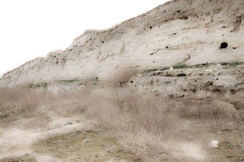
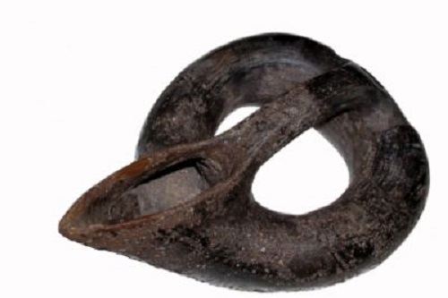
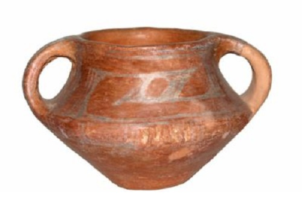

Селищната могила Юнаците, наричана още „Плоската могила", е на 1,5 км югозападно от с. Юнаците и 6км от Пазарджик. Има асфалтиран път до самата могила и малък паркинг, където може да оставите колата си. Препоръчително е могилата да се посети, когато времето е сухо, тъй като около самата могила няма алеи и противно на очакванията ви, "Юнаците" не представлява сграда от издялани камъни, а просто насип, в който под слоевете почва от различни епохи археолозите събират сведения за бита и живота на хората, живели по тези места. Изглежда е разкопана само половината могила - там, където работят археолозите ясно се виждат слоевете в почвата, които бележат различни периоди във времето. Могилата е толкова богата на находки, че дори в неразкопаните райони около могилата може да видите отделни парченца керамика или обработени кости на животни.
Могила Юнаците е с изключително важно географско разположение в район, където от най-дълбока древност минава главният Евроазиатски път от югоизток на северозапад, свързващ Егейско-Анатолийската област с Балканския полуостров и Централна Европа. Могилата е с форма на пресечен конус с диаметър на долната основа 110 м. и височина 12м.
Първото й описание правят братя Шкорпил през 1898 г. в книгата си „Първобитните люде в България". През 1939 г. под ръководството на Васил Миков от Народния археологически музей - София, се предприемат археологически разкопки. К. Христович пише във в. "Лъча" за предстоящите проучвания, като продчертава че селищната могила е един от най-интересните и ценни за науката праисторически обекти в страната и в Европа.В публикацията за първите разкопки В. Миков изтъква значението на могилата като посочва, че находките са уникални не само за България, но и за цяла Югоизточна Европа. Те показват връзките на областта с Анатолия в Мала Азия , Егейските острови , Македония и Унгария.Тази оценка се споделя и от Владимир Милойчич, който през 1949 г. в книгата си, посветена на хронологията на неолита и ранната бронзова епоха в Югоизточна и Средна Европа, пише, че селищната могила при с. Юнаците, е еталонен паметник за установяване на хронологията и периодизацията на халколита и бронзовата епоха в западната част на Горнотракийската низина. Той определя три културни пласта на селищната могила - Юнаците І - ІІІ, като културата на ранната бронзова епоха, открита в пласт Юнаците ІІ, той нарича „култура Юнаците".
Поради голямото научно значение на многопластовата могила Юнаците, през 1976 г. започват редовни археологически разкопки, провеждани от Археологически институт с музей при БАН, София и Окръжен исторически музей - Пазарджик. Научни ръководители са проф. Румен Катинчаров и Величка Мацанова. Проучванията обхващат цялата източна част на могилата.
От 1981г. експедицията на Юнаците става международна с участието на руски специалисти. Ръководител на руския екип е проф. д-р Николай Я. Мерперт от Археологически институт - Руска академия на науките, Москва.В резултат на българо-руските разкопки на обекта са проучени: средновековен некропол /ХІІІ-ІV в./; селище и римско укрепление /І-ІV в./; тракийско селище /І хил. пр. Хр./. През 1989г. завършва проучването и на пласта от ранната бронзова епоха /ІІІ-ІІ хил. пр. Хр./, който е с най-голяма дебелина от аналогичните обекти в България. Разкрити са 17 последователни селища, съществували и през трите етапа на ранната бронзова епоха. Резултатите от тези разкопки имат изключително значение за изясняване на хронологията и периодизацията на бронзовата епоха в България и за решаване на редица въпроси, свързани с етногенезиса на траките. Започнато бе проучването и на последното селище от каменно-медната епоха /халколит/, /в края на V-нач. на ІV хил. пр. Хр./.
През 2002г. започна реализацията на нов българо-гръцки научен проект-„Западните части на Тракия през халколитната епоха-селищна могила Юнаците и нейната околност". Изпълнители на проекта са Археологически институт с музей при БАН, София, община Пазарджик - Регионален исторически музей-Пазарджик и National Hallenic Research Foundation / KERA-NHFR/, Гърция. Ръководители на екипа от Българска страна са ст. н.с. д-р Явор Бояджиев, Стоилка Терзийска-Игнатова и Величка Мацанова. От гръцка страна ръководител е д-р Йоанис Асланис. Резултатите от 30 -годишните археологически разкопки на селищна могила Юнаците са изключително важни за праисторическата наука. Разкрити са нови сведения за структурата на селищата , домостроителството, икономиката, духовния живот и погребални практики на най-древните обитатели на могилата, живели тук в продължение на няколко хилядолетия през халколита и ранната бронзова епоха. Проучванията на 6-метровия пласт от бронзовата епоха, както и сондажите в полето западно от могилата, показват, че първоначалните селища са имали предварително замислена кръгова планировка, с централна незастроена площ и укрепителна система на северната част на селището, състоящата се от ров и дървена палисада. Установена е двуделна структура на селищата - една част от тях е разположена върху издигнатия хълм, а другата представлява открито селище, намиращо се в полето западно от могилата.Проучените 42 жилища от първите два етапа на ранната бронзова епоха показват, че те са наземни, изграждани са от забити в земята дървени колове, преплетени с пръти и измазани с дебел слой от глина, примесена със слама. Имали са обикновено правоъгълен план с едно и по-рядко с две помещения. Елементи от интериора на къщите са засводената пещ, изградени на място зърнохранилища, площадка за сушене на зърно, подвижни каменни ръчни мелници /хромели/. Открити са сечива от камък, кремък, кост, рог на елен, керамични съдове и други битови предмети. В последните осем хоризонта от този пласт, отнесени към третия етап на ранната бронзова епоха, са разкрити 9 жилища, които показват приемственост в строителната техника, но като основна форма се налага апсидната постройка /с дъговидна задна стена/.
Освен за материалния бит на раннобронзовото население на Юнаците, разкопките дават ценни сведения и за духовния му живот и погребални практики. Особено важни са откритите погребения на деца до едногодишна възраст, извършени чрез трупополагане в свито положение /хокер/, в ями или специални керамични урни, поставени под пода на жилищата или под основата на пещта. При някои е открит и гробен инвентар от накити и керамични съдове.
С изчерпване на раннобронзовия пласт на Юнаците, разкопките продължават с проучване на последното селище от предходната халколитна епоха, отнесено към ІІІ фаза на късния халколит в България. Пред изследователите се разкриват свидетелства за трагичната съдба на неговите жители. Селището е опожарено, а хората стават жертва вероятно на вражеско нападение. Откритите човешки скелети на мъже, жени и деца в повечето случаи лежат върху пода на жилищата сред разтрошени керамични съдове и домашен инвентар, затрупани с големи парчета горели стенни мазилки, овъглени греди и дъски от покривите на къщите. Позите,в които са открити говорят, че те са паднали там, където смъртта ги е застигнала. Част от скелетите са обгорели от разразилия се жилищен пожар. За тяхната насилствена смърт говорят и антропологическите изследвания, които установяват, че един от черепите е пробит най-вероятно с бойна брадва.
В пределите на селището са фиксирани и още няколко човешки скелета, положени в поза хокер-традиционен начин на погребване през този период. Анализът на тези гробове обаче говори, че погребенията са извършени при необичайни обстоятелства, без гробно съоръжение и инвентар и без определено подреждане. Вероятно част от оцелелите жители са успели да погребат набързо част от загиналите свои съплеменници, нямайки възможност да извършат необходимия ритуал в некропола на селището. Така загиват последните къснохалколитни обитатели на Юнаците, а заедно с тях и високата им култура. Свидетелство за нея са проучените до момента 15 жилища, изградени с глинобитна техника. В една от къщите е открита стена, последователно измазвана с червена и бяла боя. Освен традиционните пещи, работни площадки и зърнохранилища, в една от къщите бяха проучени и две съоръжения за съхраняване на месо /своеобразни „хладилници"/, каквито не са известни от други синхронни халколитни селища.
На селищна могила Юнаците предстои проучването на останалата част от културния пласт на късния и ранния халколит.
Ключовото географско положение на селищна могила Юнаците определя и голямото значение на провежданите на обекта разкопки. Точните стратиграфски наблюдения и откритите материали ще спомогнат за прецизиране на хронологията и периодизацията на халколита и ранната бронзова епоха не само в България, но и на Балканите и цяла Югоизточна Европа. Те са важен изворов материал и за установяване на взаимните връзки и културни контакти на обитателите на могилата с населението от съседните територии през праисторическия период.
Галерия